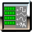

|  | Help file for TONEGENERATOR bean |
| Description: generate an audio tone SerialUID: -8514971836215086463 Version Specification: 1.0 Type of javabean: Source iterative Output[0]:class common.SampledAudio |
|
Configuration of ToneGenerator component | |
| Duration_ms | Specifies the duration of the tone in ms |
| Frequency | Specifies the frequency of the tone in Hz |
| Type | Specifies the type of tone, e.g. Sine |
| Volume | Specifies the volume |